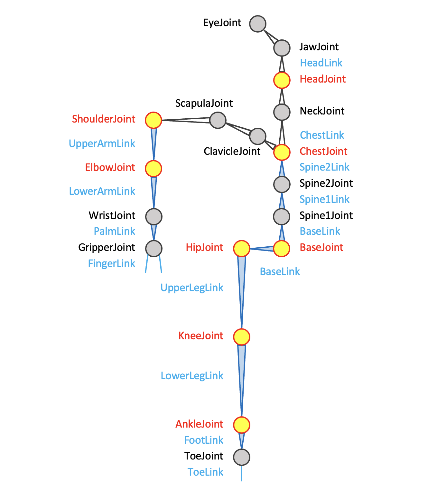

JointとLinkの対応表
MeridianのURDFのJoint名,Link名と各CG系ソフトでの名称との対応表
CG系ソフトでは関節は球体関節とみなす.
Meridianでは各軸とも最大3軸を持つ想定. ロール, ピッチ, ヨーの順番や選択は機体毎に設定.
スライダタイプのアクチュエータは別途linkに設定.
| Meridian(joint) | Meridian(link) | 骨の名称 | Unity/VRM | Blender | UE4 |
|---|---|---|---|---|---|
| c_basejoint | celvis | 骨盤 | Hips | Hips | pelvis |
| l_hipjoint | l_upperleg | 股関節 | |||
| l_upperlegjoint | l_upperleg | 左大腿骨 | LeftUpperLeg | Left leg | thigh_l |
| l_kneejoint | l_knee | 左膝 | |||
| l_lowerlegjoint | l_lowerleg | 左脛骨 | LeftLowerLeg | Left knee | calf_l |
| l_anklejoint | l_ankle | 左踵 | |||
| l_footjoint | l_foot | 左足・足根骨 | LeftFoot | Left ankle | foot_l |
| l_toejoint | l_toe | 左つま先・趾骨 | LeftToes | Left toe | ball_l |
| c_spine1joint | c_spine1 | 背骨1 | Spine | Spine | spline_01 |
| c_spine2joint | c_spine2 | 背骨2 | spline_02 | ||
| c_chestjoint | c_chest | 胸部 | Chest | Chest | spline_03 |
| l_eyejoint | l_eye | 左目 | LeftEye | ||
| c_headjoint | c_head | 頭 | Head | Head | head |
| c_neckjoint | c_neck | 首 | Neck | Neck | neck_01 |
| c_jawjoint | c_jaw | 顎 | Jaw | ||
| l_scapulajoint | l_scapula | 肩甲骨部 | UpperChest | Upper Chest | |
| l_claviclejoint | l_clavicle | 左鎖骨 | |||
| l_shoulderjoint | l_shoulder | 左肩 | LeftShoulder | Left shoulder | clavicle_l |
| l_upperarmjoint | l_upperarm | 左上腕 | LeftUpperArm | Left arm | upperarm_l |
| l_elbowjoint | l_elbow | 左肘 | |||
| l_lowerarmjoint | l_lowerarm | 左下腕 | LeftLowerArm | Left elbow | lowerarm_l |
| l_wrist | l_wrist | 左手首 | LeftHand | Left wrist | hand_l |
| lalm | l_hand/palm | 左手 | |||
| l_gripperjoint1 | l_gripper1 | 左グリッパー1 | |||
| l_thumbjoint_1mp | l_thumb_1prox | 左親指骨基節 | LeftThumbProximal | Thumb0_L | thumb_01_l |
| l_thumbjoint_2pip | l_thumb_2mid | 左親指骨中節 | LeftThumbIntermediate | Thumb1_L | thumb_02_l |
| l_thumbjoint_3dip | l_thumb_3dis | 左親指骨末節 | LeftThumbDistal | Thumb2_L | thumb_03_l |
| l_indexjoint_1mp | l_index_1prox | 左人差し指骨基節 | LeftIndexProximal | IndexFinger1_L | index_01_l |
| l_indexjoint_2pip | l_index_2mid | 左人差し指骨中節 | LeftIndexIntermediate | IndexFinger2_L | index_02_l |
| l_indexjoint_3dip | l_tindex_3dis | 左人差し指骨末節 | LeftIndexDistal | IndexFinger3_L | index_03_l |
| l_middlejoint_1mp | l_middle_1prox | 左中指骨基節 | LeftMiddleProximal | MiddleFinger1_L | middle_01_l |
| l_middlejoint_2pip | l_middle_2mid | 左中指骨中節 | LeftMiddleIntermediate | MiddleFinger2_L | middle_02_l |
| l_middlejoint_3dip | l_middle_3dis | 左中指骨末節 | LeftMiddleDistal | MiddleFinger3_L | middle_03_l |
| lingjoint_1mp | ling_1prox | 左薬指骨基節 | LeftRingProximal | RingFinger1_L | ring_01_l |
| lingjoint_2pip | ling_2mid | 左薬指骨中節 | LeftRingIntermediate | RingFinger2_L | ring_02_l |
| lingjoint_3dip | ling_3dis | 左薬指骨末節 | LeftRingDistal | RingFinger3_L | ring_03_l |
| l_littlejoint_1mp | l_little_1prox | 左小指骨基節 | LeftLittleProximal | LittleFinger1_L | pinky_01_l |
| l_littlejoint_2pip | l_little_2mid | 左小指骨中節 | LeftLittleIntermediate | LittleFinger2_L | pinky_02_l |
| l_littlejoint_3dip | l_little_3dis | 左小指骨末節 | LeftLittleDistal | LittleFinger3_L | pinky_03_l |
赤文字は多くのヒューマノイドで使用されている基本的なジョイント.
